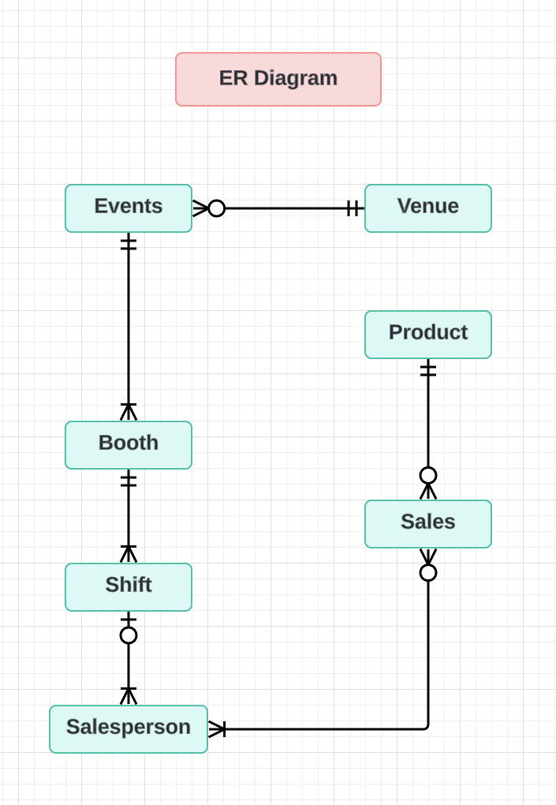

Transforming Retail with SQL
The Challenge
FoxCore Retail, a vibrant company specializing in novelty items for music festivals and trade shows, was facing significant challenges with its data management system. Manual data entry errors, inefficient sales tracking, and the lack of real-time analytics were hindering their growth and decision-making capabilities.
Our Mission
Our team was tasked with transforming FoxCore's data management into a robust, automated system. The objective was clear: develop a relational database that not only automates sales tracking but also provides real-time insights, ensuring data integrity and supporting strategic decisions.
The Journey
1. Understanding the Problem
We began by diving deep into FoxCore’s existing processes, identifying key pain points. The manual data entry process was prone to errors and time-consuming. There was an urgent need for a system that could handle large volumes of sales data accurately and efficiently.
2. Designing the Solution
With a thorough understanding of the problem, we designed an Entity-Relationship (ER) model to map out the data entities and their relationships. This model was crucial in structuring the database to ensure data integrity and minimize redundancy.
3. Building the Database
Using PostgreSQL, we developed a relational database that automated sales data recording and retrieval. Here’s a glimpse of the code we used:
-- Example: SQL for creating a table
CREATE TABLE Events (
EventID SERIAL PRIMARY KEY,
Name VARCHAR(100) NOT NULL,
Date DATE NOT NULL,
VenueID INT REFERENCES Venues(VenueID)
);
4. Ensuring Efficiency
To handle high volumes of queries efficiently, we optimized the database with views and indexes. This ensured quick data retrieval and smooth operations even during peak times.
-- Example: SQL for creating an index
CREATE INDEX idx_event_date ON Events(Date);
The Impact
Our efforts resulted in a system that dramatically improved operational efficiency. The automated sales tracking reduced errors and saved time, while the real-time analytics provided FoxCore with valuable insights into sales performance, product popularity, and event profitability.
FoxCore could now make informed, data-driven decisions, propelling their strategic planning to new heights. The system we built was not only robust but also scalable, ready to grow alongside the company.
Looking Ahead
The FoxCore Retail Project laid a solid foundation for future enhancements. We proposed continuous database evolution to adapt to market dynamics and growth, integrating advanced analytics for better strategic planning and expanding functionality for mobile access.
Conclusion
Working on the FoxCore Retail Project was a transformative experience. It highlighted the power of strategic data management in solving real-world problems and driving business growth. This project not only addressed immediate operational challenges but also set the stage for sustained innovation and success.
Visual Highlights
ER Diagram
Key Code Snippets
-- Example: SQL for creating a table
CREATE TABLE Events (
EventID SERIAL PRIMARY KEY,
Name VARCHAR(100) NOT NULL,
Date DATE NOT NULL,
VenueID INT REFERENCES Venues(VenueID)
);
-- Example: SQL for inserting data
INSERT INTO Events (Name, Date, VenueID)
VALUES ('Music Festival', '2024-06-01', 1);
-- Example: SQL for creating relationships
ALTER TABLE Sales ADD CONSTRAINT FK_ProductID FOREIGN KEY (ProductID) REFERENCES Products(ProductID);